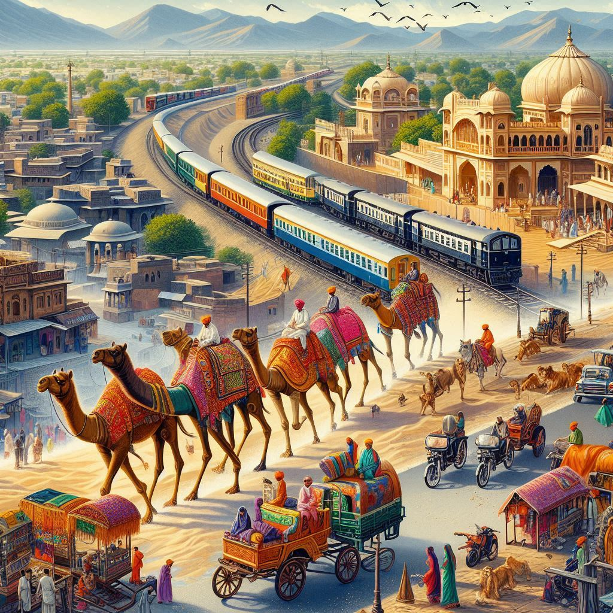
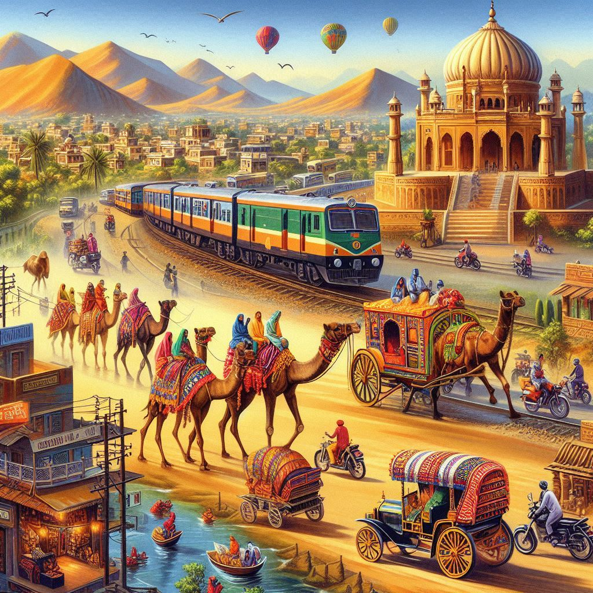

Rajasthan, one of India's largest states, offers a range of transportation options that connect its vast desert landscape, historic cities, and rural areas. The state's transportation network includes roads, railways, airways, and local transit systems, ensuring accessibility across its diverse regions. Below is an overview of the major modes of transportation in Rajasthan:
1. Road Transportation
- National and State Highways:
Rajasthan has an extensive network of national highways (NH) and state highways (SH) connecting major cities like Jaipur, Udaipur, Jodhpur, and Jaisalmer. Important highways include the NH 48, which connects Delhi to Jaipur and further to Ahmedabad, and the NH 62, which connects Jodhpur to Barmer.
- Public Buses:
The Rajasthan State Road Transport Corporation (RSRTC) operates buses across Rajasthan, providing affordable travel options between cities and towns. These buses serve both urban and rural areas, connecting major tourist destinations like Pushkar, Mount Abu, and Ranthambhore.
- Auto Rickshaws and Taxis:
Auto rickshaws are a common mode of transport in urban areas like Jaipur and Jodhpur. They are affordable for short-distance travel, especially for tourists looking to explore city landmarks.
- App-based Ride-Hailing:
Popular ride-hailing services such as Ola and Uber operate in Rajasthan’s major cities, including Jaipur and Udaipur, offering a modern and convenient alternative to traditional taxi services.
2. Rail Transportation
- Indian Railways:
Indian Railways is one of the most widely used modes of transportation in Rajasthan, providing extensive connectivity to major cities and towns. Jaipur Junction, Jodhpur Junction, and Ajmer Junction are some of the key railway stations in the state.
- Metro Rail (Jaipur Metro):
Jaipur Metro is an important urban transit system that serves the capital city, Jaipur. The metro network connects key areas such as Mansarovar, Badi Chaupar, and Chandpole, offering a fast and efficient mode of transport in the city.
3. Air Transportation
- Jaipur International Airport:
Jaipur Airport, also known as Sanganer Airport, is the primary airport serving Rajasthan. It connects the state to major Indian cities like Delhi, Mumbai, Chennai, and Bangalore, as well as international destinations like Dubai and Abu Dhabi.
- Udaipur Airport:
Maharana Pratap Airport in Udaipur connects the city to major cities like Mumbai and Delhi. Udaipur is a popular tourist destination, and the airport helps facilitate easy travel to this historic city.


4. Bicycle and Pedestrian Transport
- Cycling:
Cycling is becoming increasingly popular in Rajasthan, particularly in cities like Jaipur and Udaipur, where tourists use bicycles to explore city palaces, lakes, and forts. The state also promotes cycling as an eco-friendly alternative to motorized transport in urban areas.
- Walking:
Rajasthan's historical cities like Jaipur, Udaipur, and Jaisalmer are perfect for walking tours. Many of the major tourist attractions, such as Amer Fort, City Palace, and Jaisalmer Fort, are best explored on foot to fully experience their grandeur and beauty.
5. Traffic Management and Infrastructure Development
- Jaipur’s Traffic System:
Jaipur has a well-organized traffic system, with clear signage, signal-controlled intersections, and designated bus lanes. However, traffic congestion can be an issue in certain areas during peak hours.
- Infrastructure Projects:
Rajasthan is actively working on improving its transportation infrastructure, with major projects like the Eastern Peripheral Expressway and Rajasthan International Airport in Jodhpur. These initiatives aim to boost tourism, trade, and mobility across the state.
Conclusion
Rajasthan’s transportation network offers a diverse range of options for both locals and tourists. From the extensive railway network to the luxury trains, airways connecting key cities, and well-maintained roads, Rajasthan ensures smooth connectivity across the state. With ongoing infrastructure developments and the promotion of eco-friendly modes of transport, the state is steadily improving its transportation system to cater to the growing population and tourism sector.